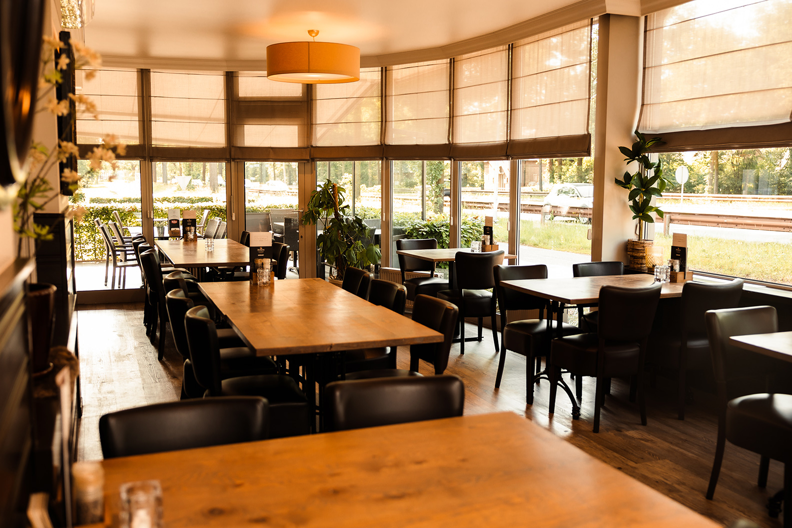
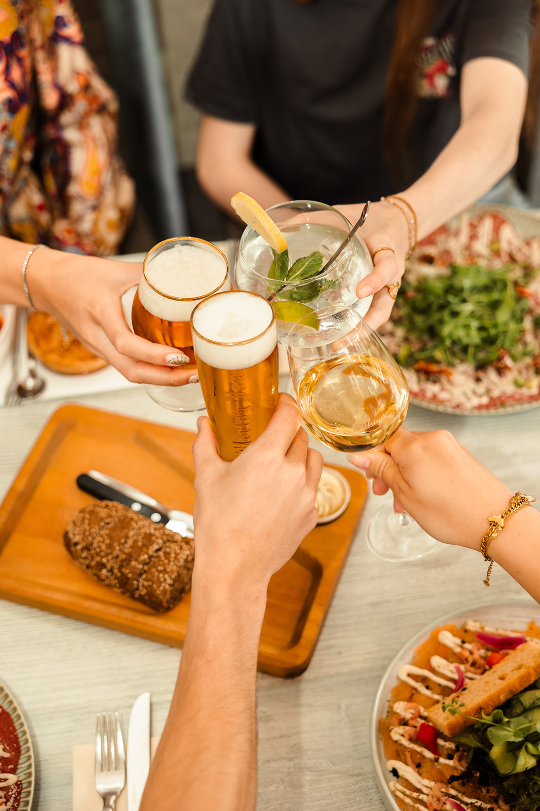
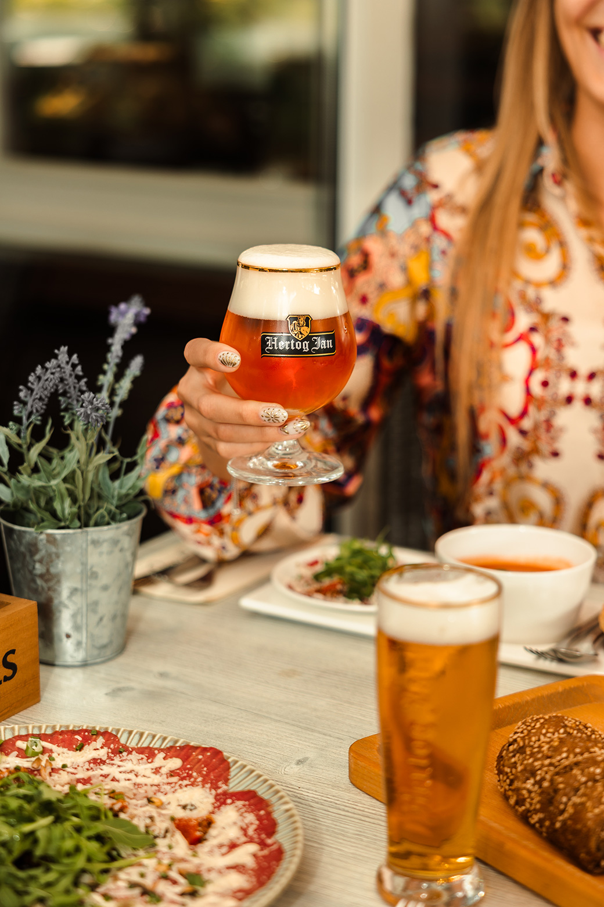
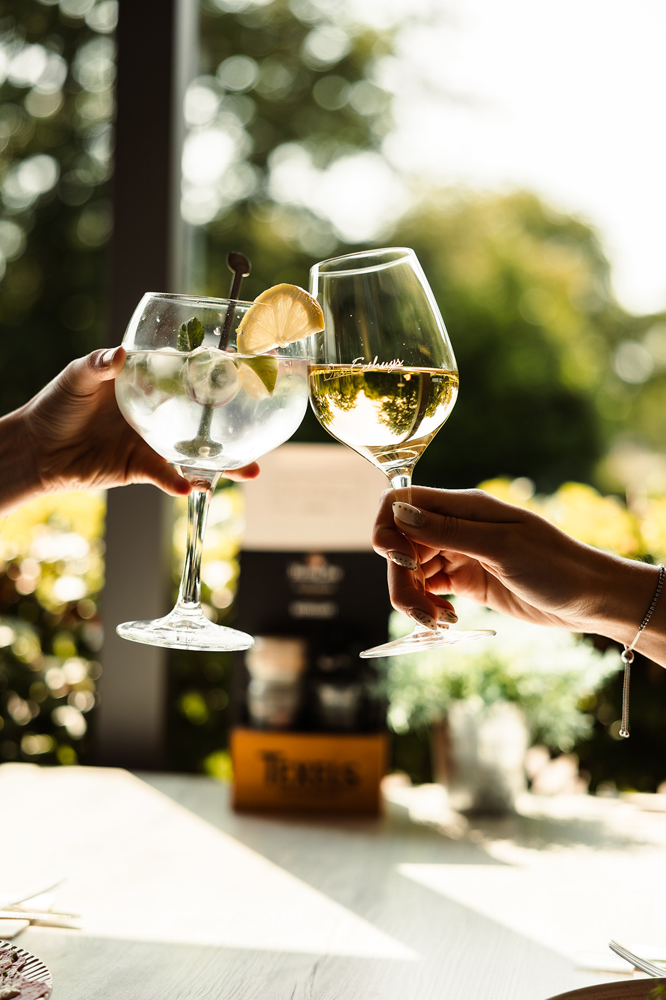
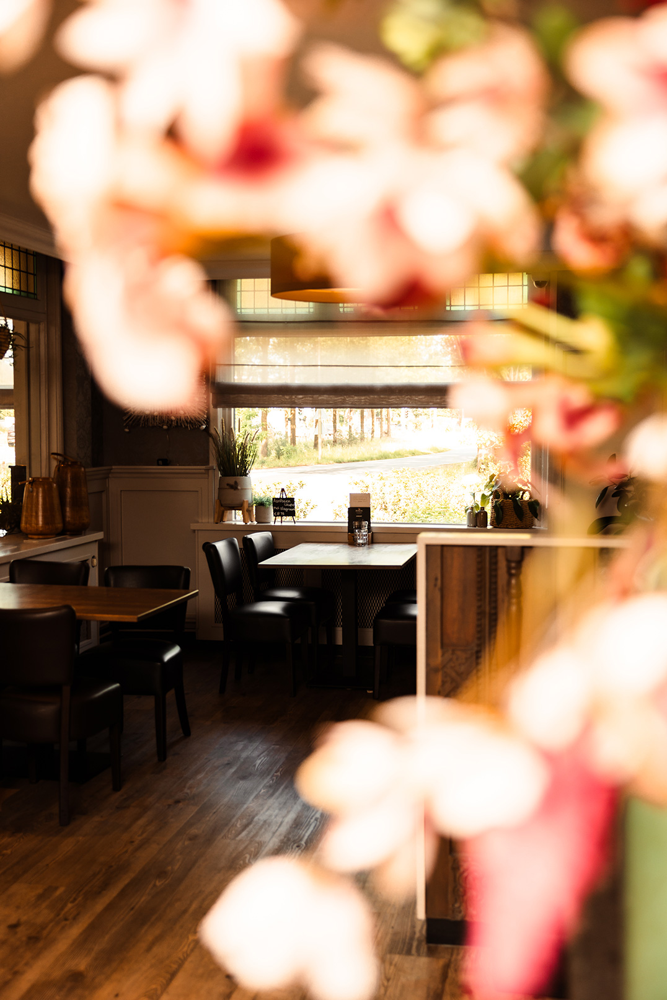

Dinerbon
Op zoek naar een culinair cadeau?
Dinerbonnen zijn dagelijks af te halen vanaf 13:00, met uitzondering van maandag en dinsdag. Elk bedrag is mogelijk: u bepaalt zelf de waarde.
Bel over een dinerbon
Reserveren
Woensdag t/m zondag open vanaf 16:00
Een sfeervolle eetgelegenheid waar gastvrijheid voorop staat. Warm ingericht, ideaal voor een ontspannen maaltijd met vrienden of familie.
Ons Eethuys in Schaijk is een sfeervolle eetgelegenheid waar gastvrijheid voorop staat. De inrichting is warm en uitnodigend, ideaal voor een ontspannen maaltijd.
Het menu biedt een diverse selectie van gerechten, met aandacht voor lokale en seizoensgebonden producten. Alle hoofdgerechten worden geserveerd met een ruim assortiment aan garnituren, zoals u van ons gewend bent.
De persoonlijke benadering en de focus op kwaliteit maken het een fijne plek om met vrienden of familie samen te komen en te genieten van goed eten in een prettige ambiance.
Vragen of opmerkingen, bijvoorbeeld over allergenen of het reserveren van een tafel? Stuur gerust een e-mail naar info@onseethuys.nl.




Reserveer uw tafel door te bellen of te mailen; geef de dag, het tijdstip en het aantal personen door. Op openingsdagen zijn wij telefonisch bereikbaar vanaf 13.00 uur. Spreekt u ons liever persoonlijk? Bel gerust tijdens openingstijden.
Speciale dagen waarop we extra open zijn, of dagen dat we gesloten zijn voor bijvoorbeeld vakantie, vindt u hiernaast.
| Maandag | Gesloten |
|---|---|
| Dinsdag | Gesloten |
| Woensdag | Vanaf 16:00 |
| Donderdag | Vanaf 16:00 |
| Vrijdag | Vanaf 16:00 |
| Zaterdag | Vanaf 16:00 |
| Zondag | Vanaf 16:00 |
Op zoek naar een culinair cadeau?
Dinerbonnen zijn dagelijks af te halen vanaf 13:00, met uitzondering van maandag en dinsdag. Elk bedrag is mogelijk: u bepaalt zelf de waarde.
Bel over een dinerbonBij Ons Eethuys in Schaijk streven we naar een unieke culinaire ervaring voor onze gasten. Met een passie voor goede gerechten en een warme sfeer zijn wij op zoek naar enthousiaste medewerkers die ons team willen versterken.
Als medewerker in ons restaurant ben je het visitekaartje van Ons Eethuys. Je verwelkomt onze gasten, neemt bestellingen op en zorgt ervoor dat iedereen een onvergetelijke ervaring heeft. Daarnaast help je bij het serveren van gerechten en dranken en draag je bij aan een schone en gezellige werkomgeving.
Wil jij deel uitmaken van ons team? Stuur je cv en een korte motivatie naar info@onseethuys.nl. We kijken uit naar jouw sollicitatie!